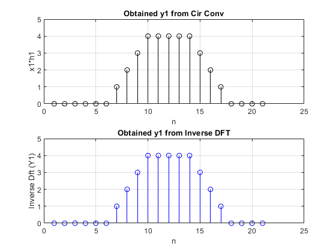
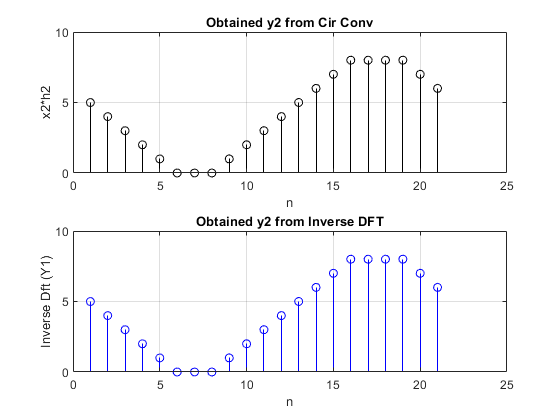
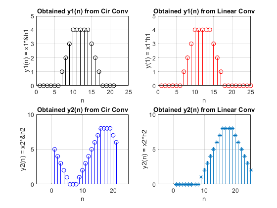

Digital Signal Processing MATLAB HW2 - q3
Professor: Dr. Sheikhzadeh Author: [SeyedAli] - [SeyedHosseini] E-mail: [alisnake@aut.ac.ir] %which I`m about to change ASAP University: Amirkabir University of Technology
Contents
Clear recent data
clear; close all; clc;
Part D
n = 1:21;
1st signals
%time domain x1 = zeros(1,21); x1(4:7) = 1; %Rectangular pulse with length 4 h1 = zeros(1,21); h1(4:11) = 1; %Rectangular pulse with length 8 N1 = 21; y1 = cir_conv(x1,h1,N1); %Using Part C function %freq domain X1 = fft(x1); %calculation of DFT H1 = fft(h1); %calculation of DFT Y1 = X1.*H1; y_1 = (ifft(Y1)); %Inverse DFT
plots
figure(1) subplot(211) stem(n,y1,"k");grid on; title("Obtained y1 from Cir Conv") xlabel("n") ylabel("x1*h1") axis([0 25 0 5]) subplot(212) stem(n,y_1,"b");grid on; title("Obtained y1 from Inverse DFT") xlabel("n") ylabel("Inverse Dft (Y1)") axis([0 25 0 5])
2nd signals
%time domain x2 = zeros(1,21); x2(5:12) = 1; h2 = zeros(1,21); h2(5:15) = 1; %Rectangular pulse with length 8 N2 = 21; y2 = cir_conv(x2,h2,N2); %Using Part C function %freq domain X2 = fft(x2); %calculation of DFT H2 = fft(h2); %calculation of DFT Y2 = X2.*H2; y_2 = (ifft(Y2)); %Inverse DFT
plots
figure(2) subplot(211) stem(n,y2,"k");grid on; title("Obtained y2 from Cir Conv") xlabel("n") ylabel("x2*h2") axis([0 25 0 10]) subplot(212) stem(n,y_2,"b");grid on; title("Obtained y2 from Inverse DFT") xlabel("n") ylabel("Inverse Dft (Y1)") axis([0 25 0 10])
Part E
y_l1 = conv(x1,h1);% Linear Convolution Of x1*h1 l1 = 1 : length(y_l1); y_l2 = conv(x2,h2);% Linear Convolution Of x1*h1 l2 = 1 : length(y_l2);
plots for part E
figure(3) subplot(221) stem(n,y1,"k");grid on; title("Obtained y1(n) from Cir Conv") xlabel("n") ylabel("y1(n) = x1*&h1") axis([0 25 0 5]) subplot(222) stem(l1,y_l1,"r");grid on; title("Obtained y1(n) from Linear Conv") xlabel("n") ylabel("y(1) = x1*h1") axis([0 25 0 5]) subplot(223) stem(n,y2,"b");grid on; title("Obtained y2(n) from Cir Conv") xlabel("n") ylabel("y2(n) = x2*&h2") axis([-5 25 0 10]) subplot(224) stem(l2,y_l2,"*");grid on; title("Obtained y2(n) from Linear Conv") xlabel("n") ylabel("y2(n) = x2*h2") axis([-5 25 0 10])
Part A
function cflipped_sig = cflip(sig,N) cflipped_sig = zeros(1,N) ; %allocation cflipped_sig(1) = sig(1) ; for n = 1 : N -1 cflipped_sig(n + 1) = sig(N - n + 1); end end
Part B
function cshifted_sig = cshift(sig,m) N = length(sig);%Length of Signal cshifted_sig = zeros(1,N); %allocation first for n = 1 : floor(N/2) cshifted_sig(n) = sig(N - m + n ); %x(n) = x(N - m + n) end for n = floor(N/2) + 1 : N cshifted_sig(n) = sig(-m + n ); %x(n) = x(-m + n) end end
Part C
function y = cir_conv(sig1, sig2, N) l1 = length(sig1); l2 = length(sig2); sig1 = [ sig1 zeros(1,N - l1)];%zero padding sig2 = [ sig2 zeros(1,N - l2)];%zero padding y = zeros(1,N); for n = 1 : N for m = 1 : N j = mod(n-m,N); j = j + 1; y(n) = y(n) + sig1(m)*sig2(j) ; end end end